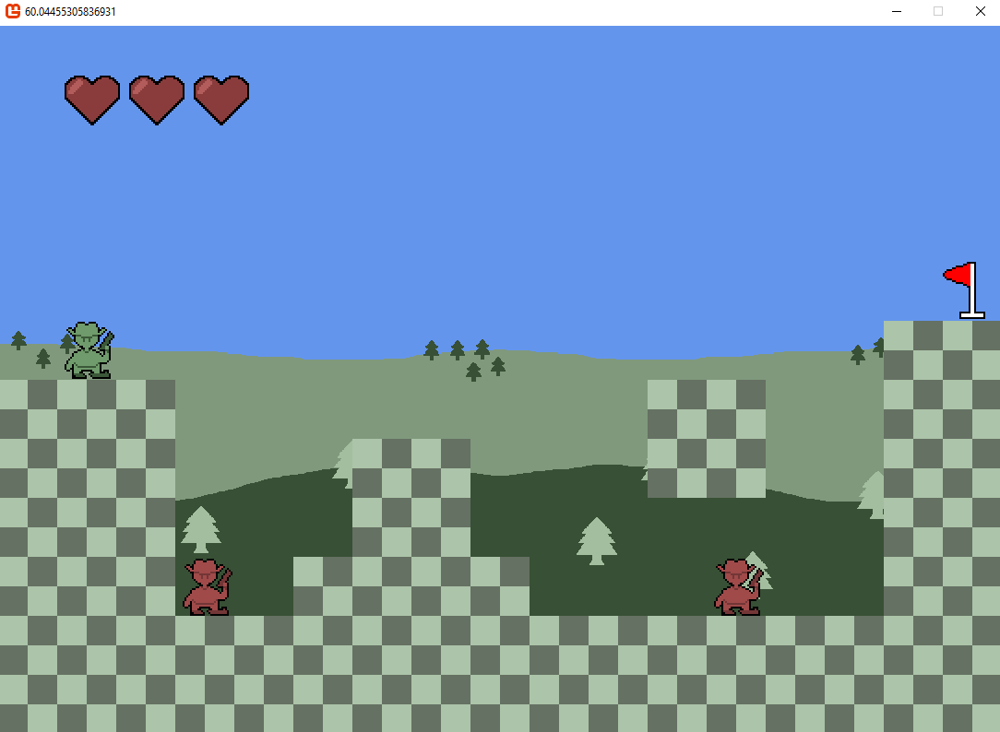
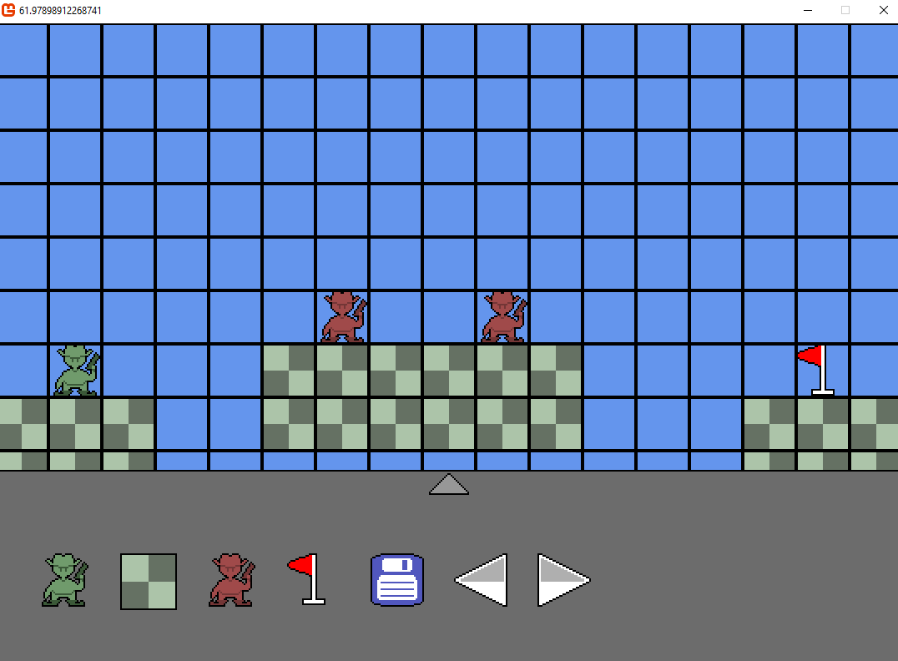
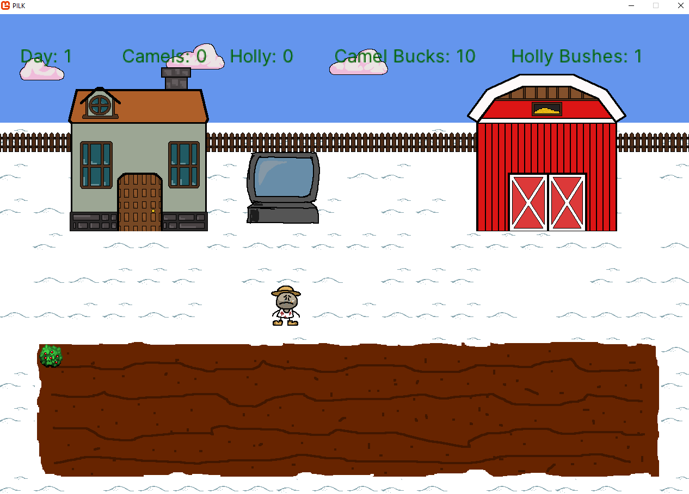
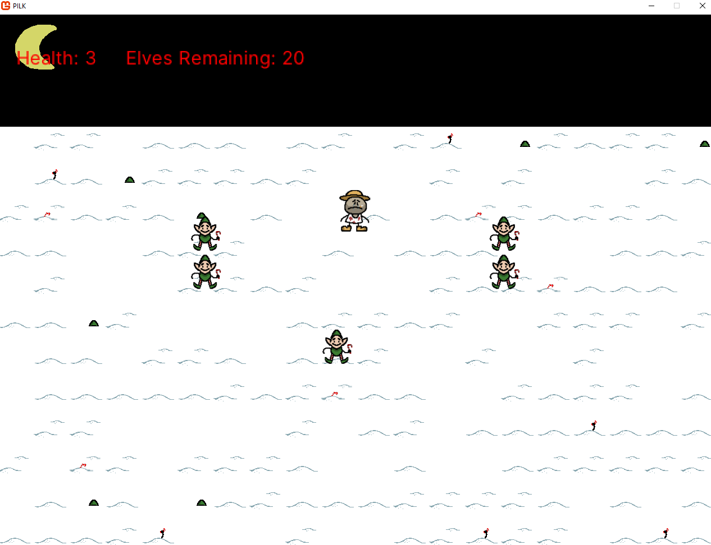

Honours Stage Project
Matthew Liney
Home Projects ContactProjects:
For my honours stage project in my final year in university, I tasked myself with researching, designing, and developing a game engine. This also included writing a 15,000 word essay about the subject. I researched the history of game engines and the software methodologies of the past as well as the emerging methods of structuring software. And while the history is quite interesting, the main research and development task of the project was to recreate an entity component system. This was based on the work of game developers around the turn of the century, when MMO games started to gain popularity. They needed a more modern method to develop games, one that was scalable and easy to alter late in development. This new design methodology would come to be known as ECS.


In short: ECS is a way of structuring your software such that new features can be easily added into the system. This is done mainly by abstracting the system into incredibly small modules, with very few overlapping parts. This results in the game world being built out of these “entities”, which are basically containers of information about what the entity is supposed to represent. These entities are then interpreted by the system, requiring very little actual programming to build a game. I used a C# framework called Monogame and Visual Studio 2022 to create the system. By the end, I had created what I set out to make. A cool game engine, with a cool level editor. I achieved the main feature goals, and implemented the ECS design fairly well, being able to implement entirely new systems seamlessly later in the development. A good first attempt at game engine development overall.
The code for this project is on my Github.
Three Thing Game - Camel Rancher
Three thing game is a game jam in which the participants must create a game based entirely on three nouns. Myself and three others participated during a Christmas themed version of this competition. Our prompt words were “north pole, camels, and holly. During the initial ideas stage, we came up with the concept of making a farming game, one where the player must take care of camels in the snowy north pole (and also the camels eat holly). I cannot quite remember how, but that idea became a farming game crossed with a twin-stick shooter / survival horror game. The work on the game was divided between me and one other programmer, with the two other team members creating the art assets and writing a convoluted story summary that scrolls vertically in a cinematic opening to the game. The other programmer and I chose to create the game from scratch within the <2 day deadline. It ended up being a fairly gruelling crunch period, but we managed to add in a wealth of not-so-serious features in our not-so-serious game.


We also managed to accrue a large number of cease and desist letters, as we packed the game with a large amount of licensed music. The game development was mainly focused on emphasising the humour of the game. The main gameplay consists of the player spending money on growing and selling holly. They spend this money on camels, the number of camels you acquired would indicate your score at the games’ end. At night, the player has to fend off the elves who attack the farm, a scene which is complete with dramatic music. One feature I insisted on was “The Camel Space”, an impossibly large void within a barn that contains a random assortment of camels based on your current number of camels.
We ended up winning the competition. You can find the game on Itch.
University Projects
In this section, I am going to describe just two of the many projects I worked on as part of the degree. These were Rust/CUDA particle simulation, and C++ advanced programming. Rust and CUDA was my first attempt at creating multi-threaded software. The goal of the module was to create a particle simulation in both languages respectively. The Rust solution specifically had to be structured in a pipeline. The Rust program was divided into different sections, one for moving the particles and calculating their physics in the air, another for calculating their position on the canvas and drawing it, and so on. Because the particle simulation had to handle hundreds-of-thousands of particles, the program had to be multithreaded. The CUDA program worked similarly. Overall, I enjoyed my work with Rust. It is a fun language to use, and makes multithreading more intuitive. I plan on using it in future projects. CUDA, however, was more cumbersome to use. CUDA is only really used for graphics programming, and can only be used on NVIDIA graphics cards. Before the module began, I had never used Rust or CUDA. Therefore, I had to learn these languages at the same time in a short span of time. Despite this, I ended up getting 84%.
Advanced programming was a C++ module where I had to create a program that read, and solved word searches. It does this by first reading in the puzzle, and a list of the answers. Using this, it can solve any properly formatted puzzle. Sounds easy, but the challenge was not to simply create this. The program had to complete the puzzles within a time limit, the faster the better. It was also being subjected to Parasoft tests, which enforce rules that influence how you program. The penalties applied by parasoft were taken off the final mark. These penalties could be as small as properly following C++ naming conventions, to properly disposing of variables, as C++ does not do this automatically and will cause memory leaks if left unchecked. With this in mind, I scored 97%. Just about as perfect as a C++ program could be.
Procedural Generation
still working on this.
Treasure For Two
PLACEHOLDERTEXT PLACEHOLDERTEXT PLACEHOLDERTEXT PLACEHOLDERTEXT